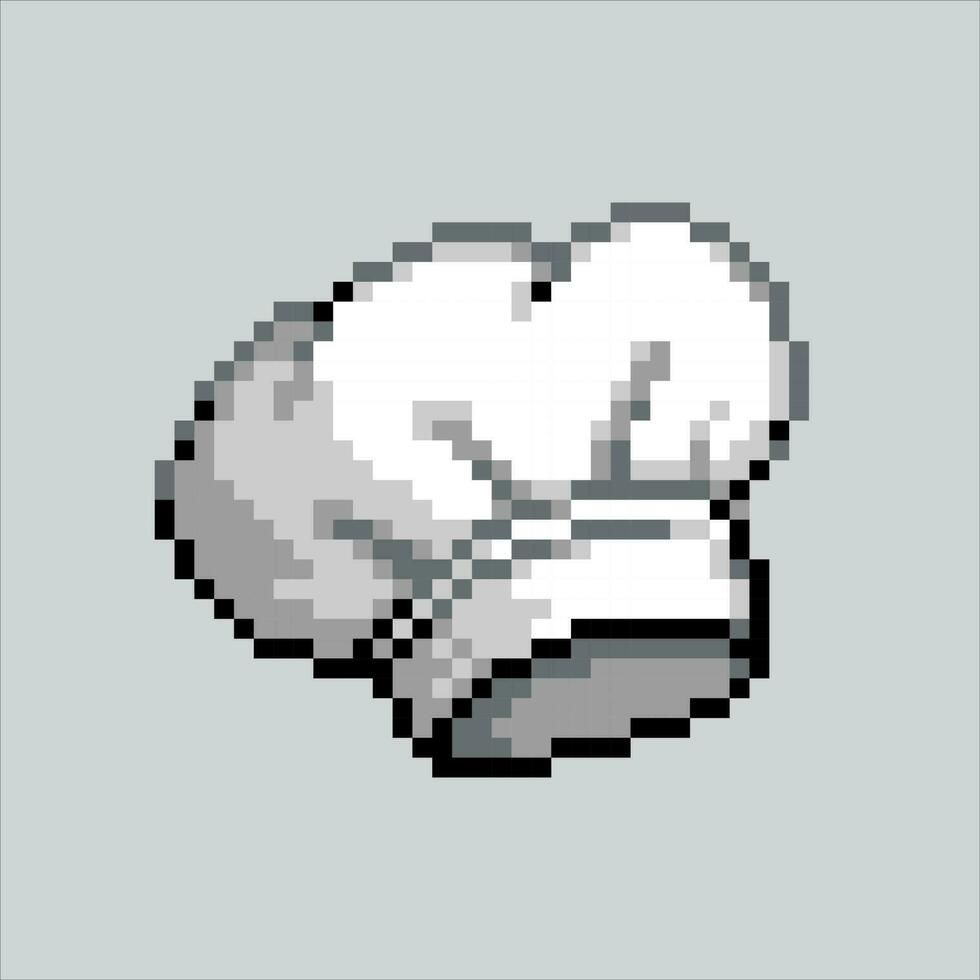
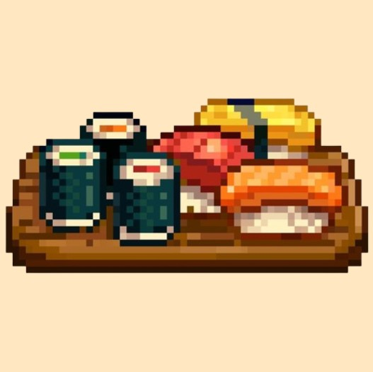
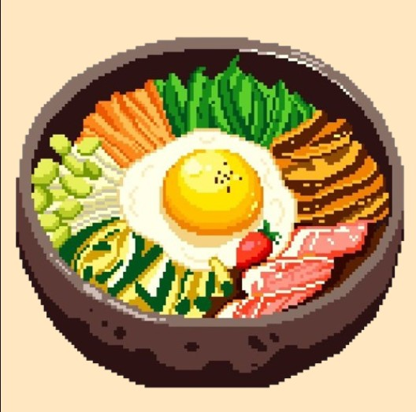
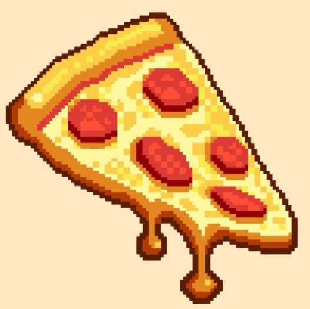
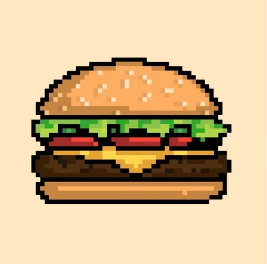

Sushi
O sushi é um prato clássico que exige precisão no preparo. Feito com arroz, peixe e alga, ele precisa ser montado corretamente antes de ser servido aos clientes.


O sushi é um prato clássico que exige precisão no preparo. Feito com arroz, peixe e alga, ele precisa ser montado corretamente antes de ser servido aos clientes.

A salada é um prato mais simples, preparado cortando e combinando ingredientes frescos. Apesar de fácil, a rapidez no preparo é essencial para atender os pedidos a tempo.

A pizza é um prato que envolve várias etapas de preparo. A massa recebe molho e ingredientes antes de ir ao forno, exigindo coordenação para não deixar o pedido queimar.

O hambúrguer é um dos pratos mais caóticos de preparar. É preciso fritar a carne, montar o pão com os ingredientes corretos e servir tudo no tempo certo.